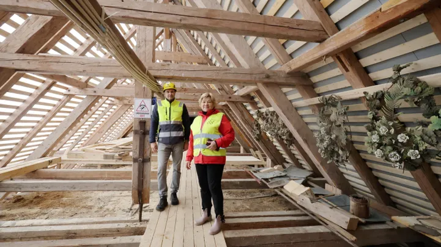
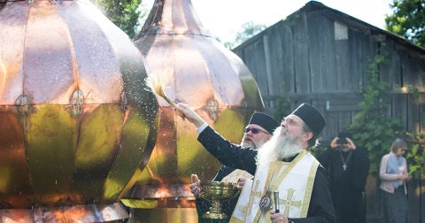
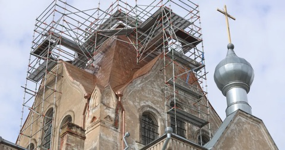
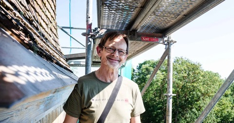
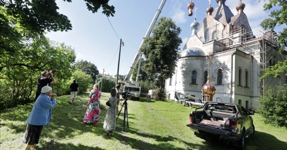
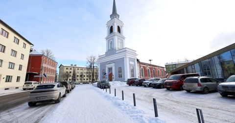

Äksi kiriku pööningul kõndides tuleb olla väga ettevaatlik, sest mõnes kohas on põrand nii habras ja auklik, et üks vale samm ja kukudki läbi lae ning ees ootab enam kui kümnemeetrine vabalangemine kirikusaali põrandale.
Seotud lood

Kiriku tornikuplid sõitsid Pärnusse meistrite hoole alla

GALERII Sõbra tänava kirik saab juurde kolm tornikuplit

Sõbra tänava kiriku ehitustöid takistab rahapuudus

Puhja kiriku tornis tuleb proteesida tugisõrestiku üht osa

GALERII Kaks tonni tõusis taeva poole ja 92-aastane puhkes rõõmupisaraisse

Torn valmis, katus ootab: Maarja kiriku taastamine seisab raha taga
Märksõnad
![Praegu on Tartu vanglas 52 Rootsist tulnud kinnipeetavat.]()